用 Hexo 搭建博客，跨平台，既方便速度又快，易入手，可定制性高，还可免费部署。
〇、 $\mathcal{Hexo}$ 简介
用官网的话来说：
什么是 Hexo？
Hexo 是一个快速、简洁且高效的博客框架。Hexo 使用 Markdown（或其他渲染引擎）解析文章，在几秒内，即可利用靓丽的主题生成静态网页。
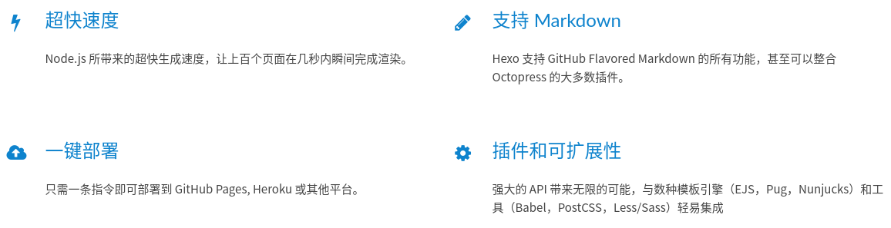
一、环境搭建
1. 安装 $\mathcal{Git}$
1 | sudo apt install git |
安装好后，检查一下是否成功：
1 | git -version |
2. 安装 $\mathcal{Node.js}$ 及 $npm$
我们还需要安装 $\mathcal{Node.js}$ 和 $npm$ 。
2-1 方案一
注意！请先不要贸然执行以下指令！请先浏览本小节之后再做决定。
1 | sudo apt install nodejs |
安装完后，检查一下：
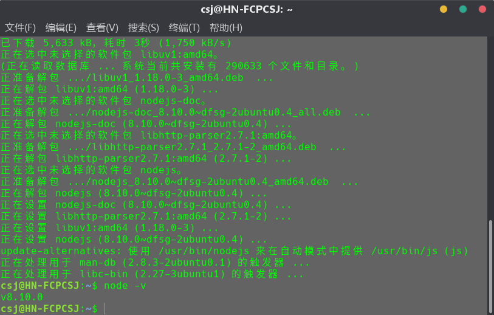
在官方文档里可以看到
安装 Hexo 相当简单，只需要先安装下列应用程序即可：
所以说这个版本有点老了……如果您和我一样更喜欢新版，就请继续看下一节。如果您觉得已经足够了，就按照上面的步骤做并跳过下一节吧：
2-2 方案二
如果您已经执行了上面的步骤，那我只好说声抱歉……执行下面的命令以卸载 $\mathcal{Node.js}$ ：
1 | sudo apt remove nodejs |
2-2-1下载 $\mathcal{Node.js}$
点开 $\mathcal{Node.js}$ 的链接，我们可以看到：
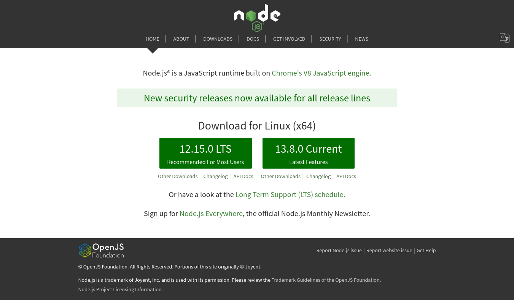
当然，如果您更希望看中文，没关系，点右上角那个谷歌翻译的图标或者用这个链接（效果相同）即可（然而这个页面我们只需要使用一次）：
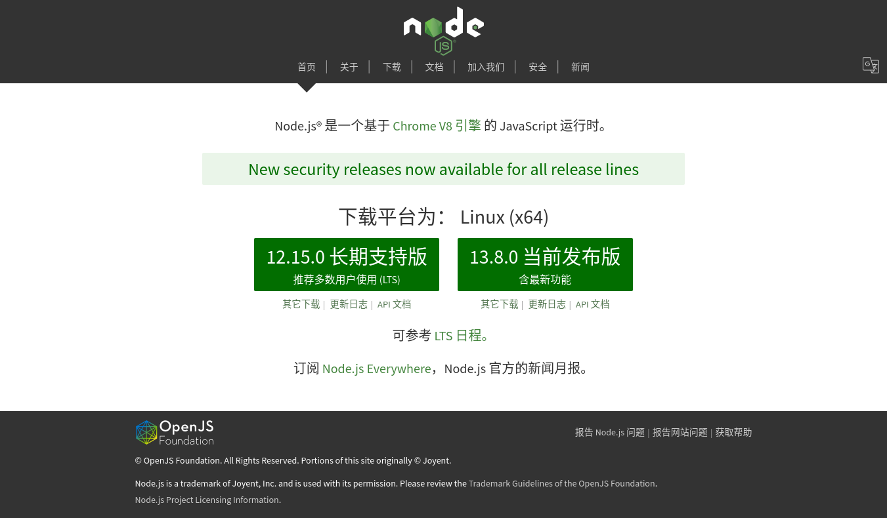
进入之后，选择您更想要的版本，就会下载相应的 .tar.xz 压缩包。建议下载 $\mathcal{LTF}$（长期支持版）。
下载完成后，转到下载目录，点击 .tar.xz 压缩包“提取到此处”。喜欢命令行的朋友也可以执行命令：
1 | tar -xvf node-*.tar.xz |
我这里运行的命令是：
1 | tar -xvf node-v12.15.0-linux-x64.tar.xz |
将解压后的文件夹放到您想要的位置并改名。用命令就是：
1 | mv node-* * #可能要加 sudo |
我运行的是：
1 | mv node-v12.15.0-linux-x64 ~/nodejs |
2-2-2 设置全局环境变量。
先登录 $root$ ：
1 | sudo -i |
然后执行下列命令
1 | echo 'PATH="$PATH:*/bin"' >> /etc/profile #*就是您安装 Node.js 的目录 |
我用的是：
1 | echo 'PATH="$PATH:/home/csj/nodejs/bin"' >> /etc/profile |
然后就加载并登出吧：
1 | source /etc/profile |
再测试是否成功：
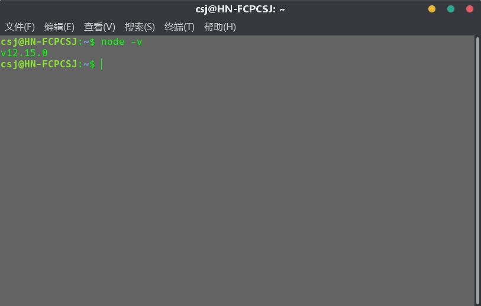
可以看到 $\mathcal{Node.js}$ 已是最新版啦！$\mathscr{P}\mathcal{erfect!}$
[^注]: 用这种方法安装的 $\mathcal{Node.js}$ 内已包含 $npm$ ，无需再下载安装。
3. 安装 $\mathcal{Hexo}$
1 | npm install -g hexo-cli |
进阶安装和使用
对于熟悉 npm 的进阶用户，可以仅局部安装
hexo包。
安装以后，可以使用以下两种方式执行 Hexo：
npx hexo将 Hexo 所在的目录下的
node_modules添加到环境变量之中即可直接使用hexo：
安装后再检测一下：
1 | hexo -v |
二、 建站
1. 初始化
先新建个文件夹，再进入该文件夹。我将其取名为 website 。
然后决定您的博客文件夹名。我将其取名为 blog 。
然后执行下列命令：（请自行更改文件夹名）
1 | hexo init blog |
好了！来测试一下吧！
输入以下命令以开启服务器：
1 | hexo serve |
或
1 | hexo s |
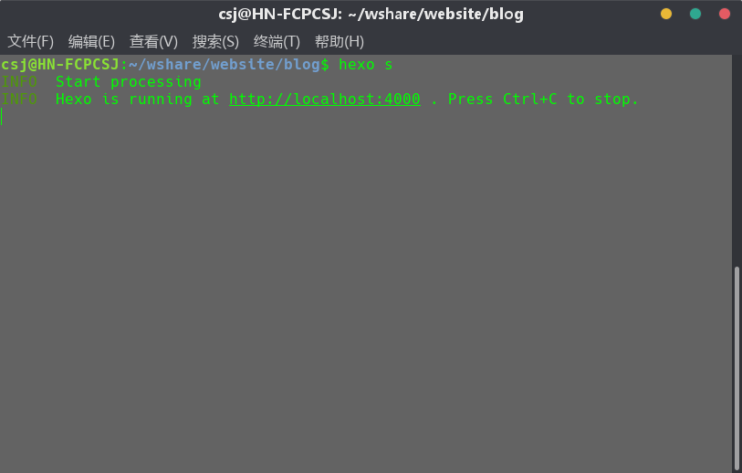
然后打开浏览器，输入 http://localhost:4000/ 。当然您也可以直接点击这个链接。
然后您就可以看到您的博客长这样：
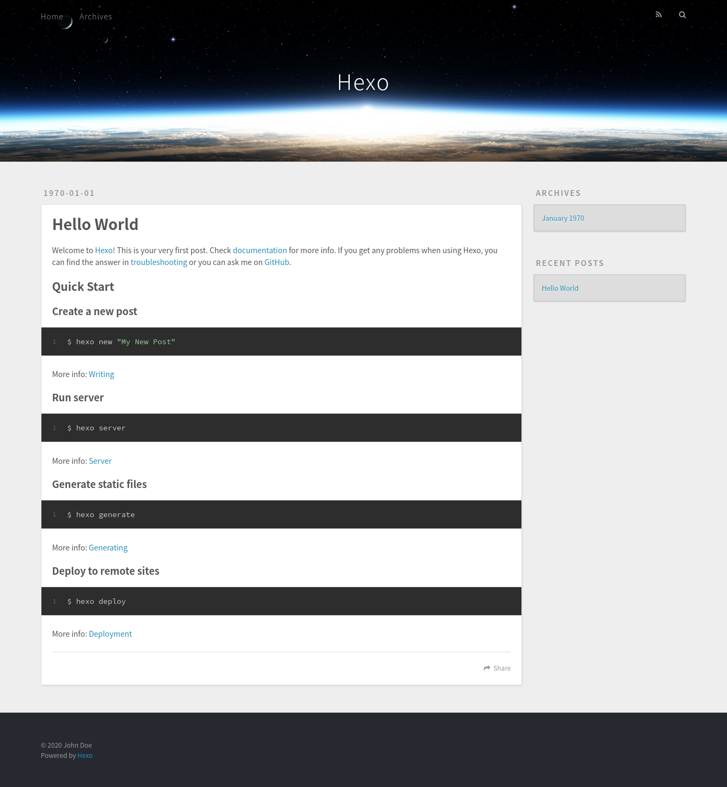
按 Ctrl+C 即可终止。
2. 部署
2-1 部署到 $\mathcal{GitHub\ Pages}$
2-1-1 新建库
首先要有个 $\mathcal{GitHub}$ 账户，如果没有的话就注册一个吧！
当您用账号登入后，新建一个 repository 。网上的教程都要求必须命名为 username.github.io（其中 username 指用户名） ，不过根据官方文档的说法，这并不是必要的：
Project page
如果您更希望您的站点部署在
<您的 GitHub 用户名>.github.io的子目录中，您的 repository 需要直接命名为子目录的名字，这样您的站点可以通过https://<您的 GitHub 用户名>.github.io/访问。您需要检查您的 Hexo 配置文件，将url修改为https://<您的 GitHub 用户名>.github.io/、将root的值修改为//
如此来看，其实我还是更建议命名为 username.github.io 。至于其他选项，还是保持默认吧……
2-1-2 连接 $\mathcal{GitHub}$
然后输入命令绑定 $\mathcal{GitHub}$ 账号：
1 | git config --global user.name "username" # GitHub 用户名 |
用 ssh-keygen 生成私钥和公钥：
1 | ssh-keygen -t rsa |
接着三个回车下去，不用输入其它的东西：
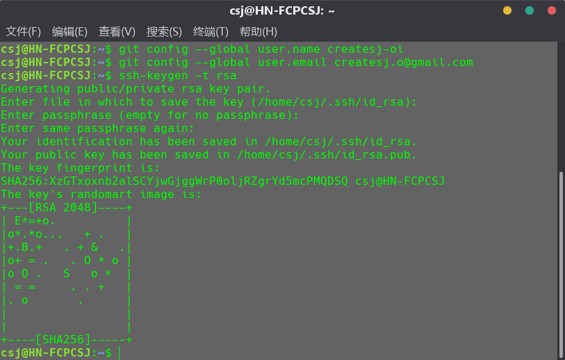
然后输入以下命令以打开生成的公钥储存文件：
1 | gedit ~/.ssh/id_rsa.pub |
复制文件内容，只用 Ctrl+A、Ctrl+C 再 Alt+F4 就成。
回到 $\mathcal{GitHub}$ 上，点击右上角的头像，再点击下面菜单中的 Settings：
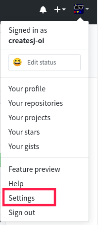
在接下来的设置界面点击 SSH and GPG keys：
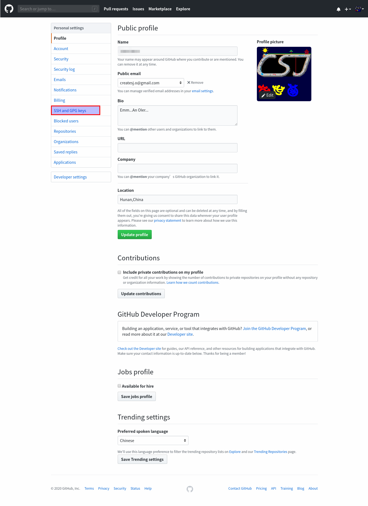
接着再点 New SSH key 来创建新秘钥：
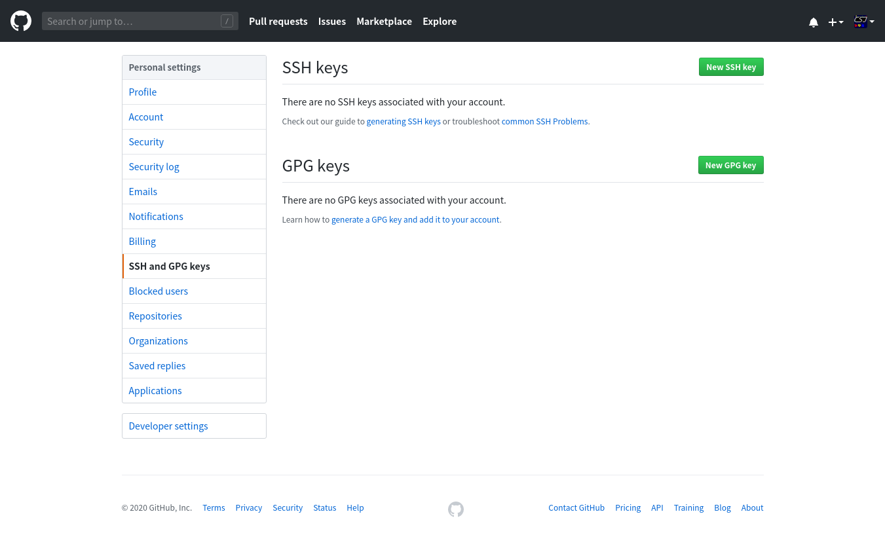
Title 随意，将复制的内容粘贴到 Key 中，然后点击 Add SSH key ：（反正是公钥，暴露出来也无妨）
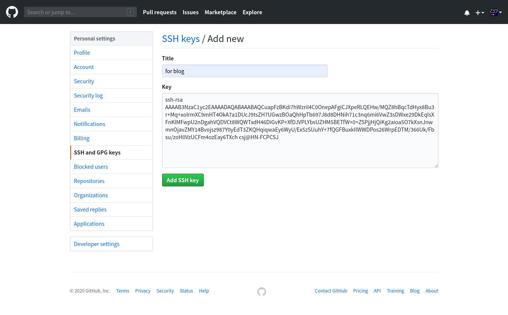
然后测试添加 $\mathcal{SSH}$ 是否成功：
1 | ssh -T git@github.com |
如果输出中在 Hi 后跟着您的 $\mathcal{GitHub}$ 用户名，则说明添加成功：
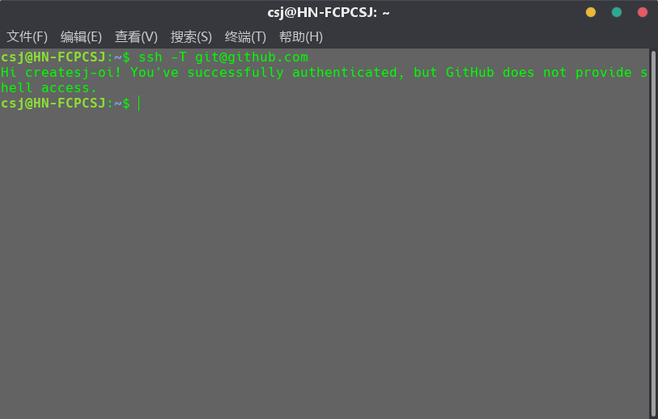
2-1-3 部署
首先需要安装 hexo-deployer-git 插件。在您的博客文件夹（我的叫 blog）内执行：
1 | npm install hexo-deployer-git --save |
然后打开 _config.yml ，在末尾找到 Deployment ：

然后改成这样：（不知道 $\mathcal{SSH}$？就是 git clone 要用的那个！）
1 | deploy: |
像这样：
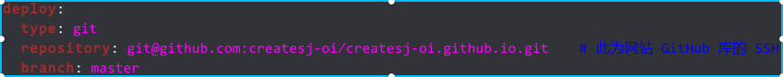
接下来就只用运行：
1 | hexo d -g |
$\mathcal{PS:}$
如果遇到 ，
，
请重新执行：
1 | npm install hexo-deployer-git --save |
看到这样：
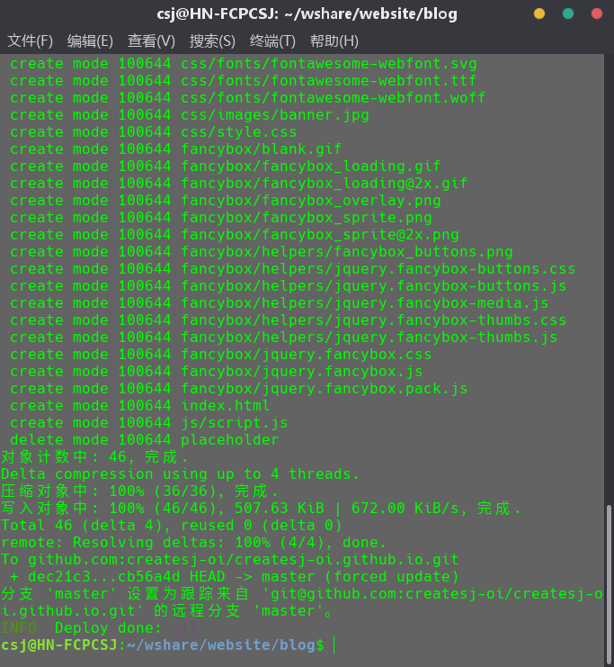
就说明部署成功啦！
打开 username.github.io ，就可进入您的博客咯~
三、基本操作
1. 写作
1-1 创建文章
请查阅官方文档。
1-2 插入本地图片
1-2-1 绝对路径
您可以直接将图片放在 source/images 目录中，然后用网站的绝对路径来访问：
1 |  |